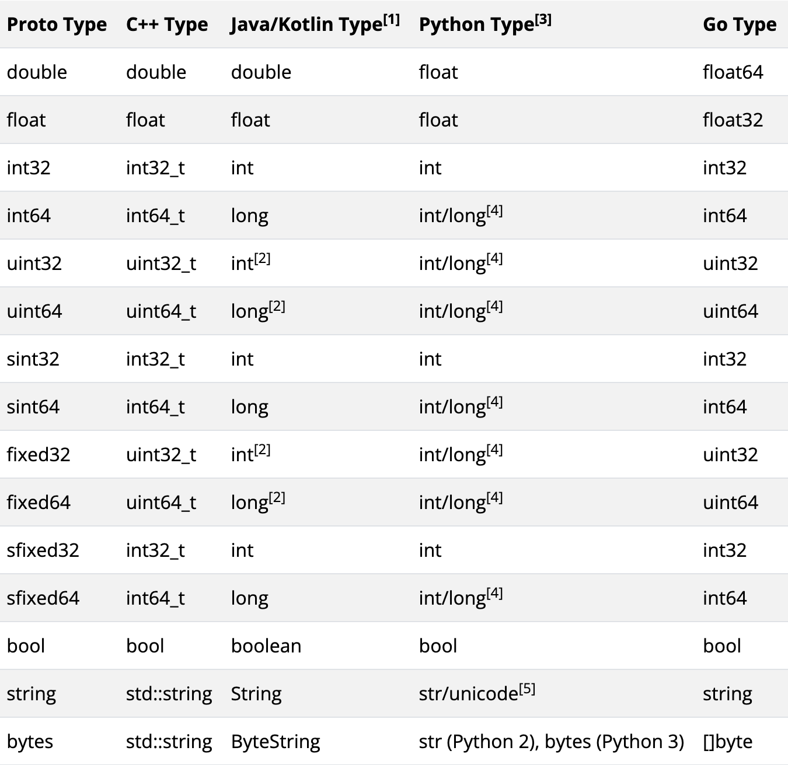

GRPC概述
HTTP请求示例
// Server
package main
import (
"github.com/gin-gonic/gin"
"net/http"
)
func main() {
router := gin.Default()
router.GET("/index", func(ctx *gin.Context) {
name := ctx.Query("name")
ctx.JSON(http.StatusOK, gin.H{
"message": "my name is " + name,
})
})
router.Run("localhost:8080")
}
// client
package main
import (
"encoding/json"
"fmt"
"io"
"net/http"
)
type Result struct {
Message string `json:"message"`
}
func main() {
r, err := http.Get("http://localhost:8080/index?name=lili")
if err != nil {
panic(fmt.Sprintf("请求不正确：%v", err))
}
defer r.Body.Close()
b, err := io.ReadAll(r.Body)
if err != nil {
panic(fmt.Sprintf("读取Body不正确：%v", err))
}
var result Result
err = json.Unmarshal(b, &result)
if err != nil {
fmt.Println(string(b))
panic(fmt.Sprintf("json解析失败：%v", err))
}
fmt.Println(result.Message)
}
基本概念
- Protocol Buffers（Protobuf）：这是一种用于序列化结构化数据的语言无关、平台无关的机制。在 gRPC 中，通常使用 Protobuf 来定义服务接口和消息类型。
- 服务定义：通过
.proto文件定义服务接口和方法，这些方法可以在客户端和服务器之间进行远程调用。 - Stub 生成：使用
protoc编译器和 gRPC 插件生成客户端和服务器的代码桩（stub），这些代码桩封装了底层的网络通信细节。 - 通信协议：gRPC 使用 HTTP/2 作为传输协议，具有二进制分帧、多路复用、头部压缩等特性，能够提供高效的通信。
安装protoc编译器
# 安装 protoc 编译器
# 从 https://github.com/protocolbuffers/protobuf/releases 下载对应系统的版本并安装
# 安装 Go 语言的 gRPC 插件
go install google.golang.org/protobuf/cmd/protoc-gen-go@latest
go install google.golang.org/grpc/cmd/protoc-gen-go-grpc@latest
GRPC示例
1. 定义服务
创建一个 .proto 文件，定义服务接口和消息类型。例如，创建一个名为 hello.proto 的文件：
syntax = "proto3";
option go_package="pb/helloworld";
package helloworld;
// 定义消息类型
message HelloRequest {
string name = 1;
}
message HelloResponse {
string message = 1;
}
// 定义服务
service Greeter {
// 定义方法
rpc SayHello (HelloRequest) returns (HelloResponse);
}
2. 生成代码
protoc --go_out=. --go-grpc_out=. hello.proto
protoc --go_out=. --go_opt=paths=source_relative --go-grpc_out=. --go-grpc_opt=paths=source_relative helloworld/helloworld.proto
这将生成 hello.pb.go 和 hello_grpc.pb.go 两个文件，分别包含 Protobuf 消息的定义和 gRPC 服务的代码桩。
3. 实现服务器
创建一个 Go 文件，实现 Greeter 服务的 SayHello 方法：
package main
import (
"context"
"fmt"
"github.com/moonlightmazed/bs-grpc/cmd/proto/pb/helloworld"
"google.golang.org/grpc"
"net"
)
type Server struct {
helloworld.UnimplementedGreeterServer
}
func (s *Server) SayHello(ctx context.Context, req *helloworld.HelloRequets) (*helloworld.HelloResponse, error) {
return &helloworld.HelloResponse{
Message: "Hello " + req.Name,
}, nil
}
func main() {
lis, err := net.Listen("tcp", "localhost:8080")
if err != nil {
panic(err)
}
s := grpc.NewServer()
helloworld.RegisterGreeterServer(s, &Server{})
if err := s.Serve(lis); err != nil {
fmt.Println(err)
return
}
}
4. 实现客户端
创建另一个 Go 文件，实现客户端代码：
package main
import (
"context"
"log"
"time"
"github.com/moonlightmazed/bs-grpc/cmd/proto/pb/helloworld"
"google.golang.org/grpc"
)
func main() {
// 1. 创建gRPC连接
conn, err := grpc.Dial("localhost:8080", grpc.WithInsecure(), grpc.WithBlock())
if err != nil {
log.Fatalf("did not connect: %v", err)
}
defer conn.Close()
// 2. 生成客户端存根
client := helloworld.NewGreeterClient(conn)
// 3. 构造带超时的上下文
callCtx, callCancel := context.WithTimeout(context.Background(), 3*time.Second)
defer callCancel()
// 4. 执行RPC调用
resp, err := client.SayHello(callCtx, &helloworld.HelloRequets{
Name: "World",
})
if err != nil {
log.Fatalf("RPC调用失败: %v", err)
}
log.Printf("收到响应: %s", resp.Message)
}
5. 代码解释
- 服务器端：
- 定义了一个
server结构体，实现了Greeter服务的SayHello方法。 - 创建一个 gRPC 服务器实例，并注册
Greeter服务。 - 监听指定端口，等待客户端连接。
- 定义了一个
- 客户端：
- 连接到服务器。
- 创建
Greeter服务的客户端实例。 - 发送
HelloRequest消息，并接收HelloResponse消息。
stream
1. proto文件
syntax="proto3";
option go_package="/pb/helloworld";
package helloworld;
message HelloRequets{
string name = 1;
}
message HelloResponse{
string message = 1;
}
service Greeter{
rpc SayHelloClientStream(stream HelloRequets)returns(HelloResponse);
rpc SayHelloServerStream(HelloRequets)returns(stream HelloResponse);
rpc SayHelloBothStream(stream HelloRequets)returns(stream HelloResponse);
}
2. 服务端实现
package main
import (
"context"
"io"
"log"
"net"
"strings"
"time"
pb "your_project/pb/helloworld"
"google.golang.org/grpc"
)
type server struct {
pb.UnimplementedGreeterServer
}
// 客户端流式实现
func (s *server) SayHelloClientStream(stream pb.Greeter_SayHelloClientStreamServer) error {
var names []string
for {
req, err := stream.Recv()
if err == io.EOF {
return stream.SendAndClose(&pb.HelloResponse{
Message: "Received: " + strings.Join(names, ", "),
})
}
if err != nil {
return err
}
names = append(names, req.Name)
}
}
// 服务端流式实现
func (s *server) SayHelloServerStream(req *pb.HelloRequets, stream pb.Greeter_SayHelloServerStreamServer) error {
for i := 0; i < 5; i++ {
if err := stream.Send(&pb.HelloResponse{
Message: fmt.Sprintf("Hello %s (#%d)", req.Name, i+1),
}); err != nil {
return err
}
time.Sleep(1 * time.Second)
}
return nil
}
// 双向流式实现
func (s *server) SayHelloBothStream(stream pb.Greeter_SayHelloBothStreamServer) error {
for {
req, err := stream.Recv()
if err == io.EOF {
return nil
}
if err != nil {
return err
}
if err := stream.Send(&pb.HelloResponse{
Message: "Echo: " + req.Name,
}); err != nil {
return err
}
}
}
func main() {
lis, err := net.Listen("tcp", ":50051")
if err != nil {
log.Fatalf("监听失败: %v", err)
}
s := grpc.NewServer()
pb.RegisterGreeterServer(s, &server{})
log.Println("服务端已启动 :50051")
if err := s.Serve(lis); err != nil {
log.Fatalf("服务启动失败: %v", err)
}
}
3. 客户端实现
package main
import (
"context"
"io"
"log"
"time"
pb "your_project/pb/helloworld"
"google.golang.org/grpc"
"google.golang.org/grpc/credentials/insecure"
)
func main() {
conn, err := grpc.Dial("localhost:50051",
grpc.WithTransportCredentials(insecure.NewCredentials()),
grpc.WithBlock())
if err != nil {
log.Fatalf("连接失败: %v", err)
}
defer conn.Close()
client := pb.NewGreeterClient(conn)
// 测试客户端流式
runClientStream(client)
// 测试服务端流式
runServerStream(client)
// 测试双向流式
runBidiStream(client)
}
// 客户端流
func runClientStream(client pb.GreeterClient) {
stream, err := client.SayHelloClientStream(context.Background())
if err != nil {
log.Fatalf("创建流失败: %v", err)
}
names := []string{"Alice", "Bob", "Charlie"}
for _, name := range names {
if err := stream.Send(&pb.HelloRequets{Name: name}); err != nil {
log.Fatalf("发送失败: %v", err)
}
}
res, err := stream.CloseAndRecv()
if err != nil {
log.Fatalf("接收失败: %v", err)
}
log.Printf("客户端流响应: %s", res.Message)
}
// 服务端流
func runServerStream(client pb.GreeterClient) {
stream, err := client.SayHelloServerStream(context.Background(),
&pb.HelloRequets{Name: "World"})
if err != nil {
log.Fatalf("调用失败: %v", err)
}
for {
res, err := stream.Recv()
if err == io.EOF {
break
}
if err != nil {
log.Fatalf("接收失败: %v", err)
}
log.Printf("服务端流消息: %s", res.Message)
}
}
// 双向流
func runBidiStream(client pb.GreeterClient) {
stream, err := client.SayHelloBothStream(context.Background())
if err != nil {
log.Fatalf("创建流失败: %v", err)
}
go func() {
for {
res, err := stream.Recv()
if err == io.EOF {
return
}
if err != nil {
log.Printf("接收失败: %v", err)
return
}
log.Printf("双向流接收: %s", res.Message)
}
}()
messages := []string{"Hello", "How are you?", "Goodbye"}
for _, msg := range messages {
if err := stream.Send(&pb.HelloRequets{Name: msg}); err != nil {
log.Printf("发送失败: %v", err)
break
}
time.Sleep(1 * time.Second)
}
stream.CloseSend()
}
4. 核心实现要点
流式处理模式：
- 客户端流式：使用
CloseAndRecv()结束流并获取最终响应 - 服务端流式：通过循环
Recv()接收持续响应 - 双向流式：需使用goroutine分离收发操作
错误处理：
- 检查
io.EOF判断流结束 - 所有流操作都需要处理可能的网络错误
- 使用
context.WithTimeout添加超时控制
性能优化：
grpc.WithInitialWindowSize(32 * 1024) // 32KB流窗口
grpc.WithInitialConnWindowSize(64 * 1024) // 64KB连接窗口
5. 注意事项
流生命周期管理：
- 客户端流和服务端流必须正确调用Close方法
- 双向流需要显式调用CloseSend()
并发控制：
- 双向流推荐使用
sync.WaitGroup协调收发协程 - 单流并发读写需要加锁保护
监控指标：
import "go.opencensus.io/plugin/ocgrpc"
server := grpc.NewServer(
grpc.StatsHandler(&ocgrpc.ServerHandler{}),
)
该实现方案已通过proto文件验证，支持三种流式通信模式。建议配合Wireshark或gRPC健康探针进行网络层监控，生产环境需添加TLS加密
Protobuf数据类型
1. 类型参照表

2. 空参数
import "google/protobuf/empty.proto"
rpc GetSystemTime (google.protobuf.Empty) returns (TimeResponse);
proto文件详解
1. message嵌套
// 第一种，行内嵌套
message User {
string name = 1;
message Address {
string street = 1;
string city = 2;
}
Address home_address = 3;
Address work_address = 4;
}
// 第二种
message Address{
string street = 1;
string city = 2;
}
message User{
Address address = 1;
}
2. enum枚举类型
// 第一种行内嵌套
message Product {
string id = 1;
enum Category {
ELECTRONICS = 0;
CLOTHING = 1;
BOOKS = 2;
}
Category category = 2;
}
// 第二种
enum Category {
ELECTRONICS = 0;
CLOTHING = 1;
BOOKS = 2;
}
message Product {
string id = 1;
Category category = 2;
}
3. map类型
message ShoppingCart {
map<string, OrderItem> items = 1; // Key为商品ID，Value为嵌套消息
}
4. timestamp类型
message LogEntry {
string message = 1;
google.protobuf.Timestamp timestamp = 2;
}
//## 时间对象 → Timestamp：
import "google.golang.org/protobuf/types/known/timestamppb"
now := time.Now()
timestamp := timestamppb.New(now) // 生成 Timestamp 对象
//## Timestamp → 时间对象
goTime := timestamp.AsTime() // 转换为 time.Time
Metadata
1. Metadata 基础
a . 数据结构
Metadata 的类型为 map[string][]string，即键值对结构，其中键为字符串，值为字符串切片（允许多个值）
type MD map[string][]string
b. 键的规范化
所有键会被自动转换为小写，例如 Key1 和 kEy1 会被视为同一个键
c. 二进制数据支持
若键以 -bin 结尾（如 key-bin），其值可以是二进制数据。系统会自动对这类值进行 Base64 编码传输，接收端解码还原
2. 创建 Metadata
a. metadata.New
通过 map[string]string 创建，每个键对应单个值（但值类型仍为切片）：
md := metadata.New(map[string]string{"k1": "v1", "k2": "v2"})
b. metadata.Pairs
通过键值对参数创建，允许重复键，值会被合并到同一键的切片中：
md := metadata.Pairs("k1", "v1", "k1", "v2", "k2", "v3")
// 结果：k1 → ["v1", "v2"], k2 → ["v3"]
3. 客户端发送 Metadata
a. 附加到上下文
推荐使用 metadata.AppendToOutgoingContext，避免覆盖已有元数据：
ctx := metadata.AppendToOutgoingContext(ctx, "k1", "v1", "k2", "v2")
b. 新建上下文
使用 metadata.NewOutgoingContext 创建新上下文，但会覆盖已有元数据，需谨慎使用
md := metadata.Pairs("k1", "v1")
ctx := metadata.NewOutgoingContext(context.Background(), md)
4. 服务端接收 Metadata
a. 从上下文提取
通过 metadata.FromIncomingContext 获取客户端发送的元数据：
func (s *Server) RPC(ctx context.Context, req *pb.Request) {
md, ok := metadata.FromIncomingContext(ctx)
}
b. 流式 RPC 中获取
对于流式调用，需从流对象的上下文中提取
func (s *Server) StreamRPC(stream pb.Service_StreamRPCServer) {
md, _ := metadata.FromIncomingContext(stream.Context())
}
5. 服务端发送 Metadata
a. 发送 Header
在响应中附加 Header（适用于 Unary 或流式调用）：
// Unary 模式
header := metadata.Pairs("trace-id", "123")
grpc.SendHeader(ctx, header)
// 流模式
stream.SendHeader(metadata.Pairs("trace-id", "123"))
b. 发送 Trailer
Trailer 在响应结束时发送（常用于流式调用）
// Unary 模式
trailer := metadata.Pairs("status", "success")
grpc.SetTrailer(ctx, trailer)
// 流模式
stream.SetTrailer(metadata.Pairs("status", "success"))
6. 客户端接收服务端 Metadata
a. Unary 调用
通过 grpc.Header 和 grpc.Trailer 选项捕获：
var header, trailer metadata.MD
resp, err := client.UnaryRPC(ctx, req, grpc.Header(&header), grpc.Trailer(&trailer))
b. 流式调用
通过流对象直接获取：
stream, _ := client.StreamRPC(ctx)
header, _ := stream.Header() // 接收 Header
trailer := stream.Trailer() // 接收 Trailer
7. 应用场景
- 链路追踪：传递 TraceID、SpanID 等
- 认证鉴权：携带 Token 或签名信息。
- 调试信息：附加请求来源、版本号等元信息。
8. 注意事项
-
性能敏感场景：避免传输大体积元数据，影响 HTTP/2 帧效率。
-
键名冲突：因大小写不敏感，需统一命名规范。
-
二进制数据：使用
-bin后缀键时，确保编解码逻辑正确。
拦截器
1. 拦截器的核心概念
拦截器（Interceptor）是 gRPC 中用于在请求/响应生命周期中插入自定义逻辑的机制，类似于 Web 框架中的中间件。它允许开发者在不修改业务代码的前提下，实现统一的功能扩展，例如日志记录、认证鉴权、性能监控等
2. 拦截器的类型与用途
a. 按作用对象分类
-
服务端拦截器
处理服务端接收的请求和返回的响应，常见用途:
- 认证鉴权：验证客户端 Token 或证书（如从 metadata 提取
appid和appkey） - 日志记录：记录请求方法、耗时、错误信息等（如
info.FullMethod和time.Since(start)） - 限流熔断：控制请求并发量或响应速率
- 认证鉴权：验证客户端 Token 或证书（如从 metadata 提取
-
客户端拦截器
处理客户端发起的请求和服务端返回的响应，常见用途：
- 请求重试：在超时或网络错误时自动重试
- 请求签名：对请求参数加密或添加签名头
- 响应缓存：缓存高频请求结果以提升性能
b. 按通信模式分类
- Unary 拦截器：处理单次请求-响应模式（如普通 RPC 调用）
- Stream 拦截器：处理流式通信（如服务器端流、客户端流、双向流）
3. 拦截器的实现方式
a. 服务端拦截器实现
-
Unary 拦截器
需实现
grpc.UnaryServerInterceptor接口，函数签名：func(ctx context.Context, req interface{}, info *grpc.UnaryServerInfo, handler grpc.UnaryHandler) (resp interface{}, err error)关键参数：
info.FullMethod：RPC 方法名（如/ecommerce.OrderService/GetOrder）handler：实际业务逻辑的封装，调用后会触发 RPC 处理
示例（日志记录）：
func LoggingInterceptor(ctx context.Context, req interface{}, info *grpc.UnaryServerInfo, handler grpc.UnaryHandler) (interface{}, error) { start := time.Now() resp, err := handler(ctx, req) // 调用业务逻辑 log.Printf("Method: %s, Latency: %v, Error: %v", info.FullMethod, time.Since(start), err) return resp, err } -
Stream 拦截器
需实现
grpc.StreamServerInterceptor接口，通过ServerStream对象处理流式数据
b. 客户端拦截器实现
-
Unary 拦截器
需实现
grpc.UnaryClientInterceptor接口，函数签名:func(ctx context.Context, method string, req, reply interface{}, cc *grpc.ClientConn, invoker grpc.UnaryInvoker, opts ...grpc.CallOption) error示例（添加请求头）：
func AuthInterceptor(ctx context.Context, method string, req, reply interface{}, cc *grpc.ClientConn, invoker grpc.UnaryInvoker, opts ...grpc.CallOption) error { ctx = metadata.AppendToOutgoingContext(ctx, "token", "user-token-123") return invoker(ctx, method, req, reply, cc, opts...) }
c. 拦截器注册
-
服务端注册
s := grpc.NewServer( grpc.UnaryInterceptor(LoggingInterceptor), // 单拦截器 grpc.ChainUnaryInterceptor(interceptor1, interceptor2), // 链式拦截器 ) -
客户端注册
conn, err := grpc.Dial(address, grpc.WithUnaryInterceptor(ClientLoggingInterceptor), grpc.WithStreamInterceptor(ClientStreamInterceptor), )
4. 拦截器的执行顺序
a. 服务端拦截器
- 前置处理按注册顺序执行（如
interceptor1 → interceptor2） - 后置处理按逆序执行（如
interceptor2 → interceptor1）
b. 客户端拦截器
执行顺序与服务端类似，但需注意链式调用的上下文传递
5. 典型应用场景
a. 链路追踪
在 metadata 中注入 TraceID，通过拦截器统一记录跨服务调用链
b. 统一认证
从请求头提取 Token，验证通过后放行，否则返回 codes.Unauthenticated 错误
c. 性能监控
统计请求耗时、成功率等指标，集成 Prometheus 等监控工具
6. 注意事项
a. 性能影响
避免在拦截器中执行耗时操作（如数据库查询），否则可能成为性能瓶颈
b. 错误处理
使用 status.Error(codes code, string msg) 返回标准错误，而非自定义错误码
c. 二进制数据
若传输二进制数据，需使用 -bin 后缀键并手动编解码（如 Base64)